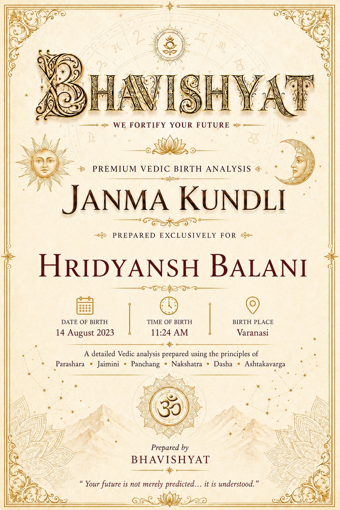
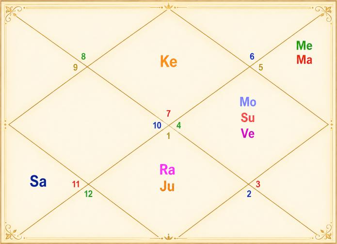

Janma Kundli • Hridyansh Balani
Birth Details & Panchang
| Name | Hridyansh Balani | Paksha | Krishna |
| Date of Birth | 14 August 2023 | Tithi | Chaturdashi (14) |
| Time of Birth | 11:24 AM | Nakshatra | Pushya |
| Birth Place | Varanasi | Vaar | Monday |
| Longitude | 83°00' E | Yoga | Siddhi |
| Latitude | 25°20' N | Karan | Vishti / Bhadra |
| Ascendant | Libra | Asc Lord | Venus |
| Tithi Lord | Venus | Tithi Deity | Rudra / Shiva |
| Nakshatra Lord | Saturn | Nakshatra Deity | Brihaspati |
| Yoga Deity | Ganesha | Karan Deity | Kaal |
| Yogi | Mars | Duplicate Yogi | Saturn |
| Abhiyogi | Ketu | Dagdha Rashi | Gemini (3), Virgo (6), Sagittarius (9), Pisces (12) |
Natal Chart (Rashi)

| Planet Distribution | Visible Half, Upper Half | ||
| Ascendant | Libra (Tula) | Moon / Sun Sign | Cancer (Karka) / Cancer (Karka) |
| Malefic | Mercury (Budh), Jupiter (Guru) | Shunya Nakshatra | Purva Ashadha, Uttara Ashadha, Shravana |
| Maraka | Mars (Mangal) | Dasha Balance | 18Y 9M 17D |
| Badhaka | Sun (Surya) | Mangalik | No |
| Birth Dasha | Sa-Sa-Sa (1-1-1) | ||
Janma Kundli • Hridyansh Balani
Favourable Influences
| Benefic Years | 18, 20, 25, 27, 29, 34, 36, 38 | ||
| Favourable Days | Saturday, Wednesday, Friday | ||
| Favourable Planets | Saturn, Mercury, Venus, Moon, Rahu | ||
| Favourable Signs | Aries, Taurus, Sagittarius, Capricorn (BAV) | ||
| Favourable Ratna | Diamond, Blue Sapphire | Favourable UpRatna | White Sapphire, Blue Topaz, Peridot, Green Sapphire |
| Lucky Ratna | Emerald | Favourable Deity | Lakshmi |
| Favourable Metal | Silver | Favourable Colour | White |
| Direction | South-East | Favourable Cereals | Rice |
| Favourable Plant | Long Pepper, Krishna Kamal | ||
| Favourable Temple | Mahalakshmi Temple (Ujjain) | ||
Planets in Rashi Chart
| Planet | Lordship | Sign | Nakshatra | Nak. Lord | Nak. Count | Nav Tara | Char Karak |
|---|---|---|---|---|---|---|---|
| Sun | 11L | Cancer (4) | Ashlesha | Mercury | 2 N | 5 | Amatyakarak |
| Moon | 10L | Cancer (4) | Pushya | Saturn | 1 N | 6 | DaraKarak (7H) |
| Mars | 7L, 2L | Leo (5) | Uttara Phalguni | Sun | 5 N | 7 | Atmakarak (Life) |
| Mercury | 9L, 12L | Leo (5) | Purva Phalguni | Venus | 4 N | 2 | Matrikarak (4H) |
| Jupiter | 3L, 6L | Aries (1) | Bharani | Venus | 22 N | 9 | Putrakarak (5H) |
| Venus | 8L, 1L | Cancer (4) | Ashlesha | Mercury | 2 N | 4 | Bhratrikaraka (3H) |
| Saturn | 4L, 5L | Aquarius (11) | Shatabhisha | Rahu | 17 N | 1 | Gnatikarak (6H) |
| Rahu | — | Aries (1) | Ashwini | Ketu | 21 N | 8 | — |
| Ketu | — | Libra (7) | Chitra | Mars | 7 N | 3 | — |
| Debilitated Planet(s) | — | Combust Planet(s) | Venus |
| Retrograde Planet(s) | Venus, Saturn | ||
Sarvastakvarga & Houses
| Very Strong (35+) | 8H | ||
| Strong (31-35) | 3H | ||
| Above Average (28-30) | 11H | ||
| Below Average (24-27) | 1H, 2H, 4H, 5H, 6H, 7H, 9H, 12H | ||
| Weak (21-23) | 10H | ||
| Very Weak (<21) | — | ||
Janma Kundli • Hridyansh Balani
Houses in Rashi Chart
| House | Sign | Planets | SAV | Lords | Aspect |
|---|---|---|---|---|---|
| 1H | Libra (7) | Ketu | 27 | — | — |
| 2H | Scorpio (8) | — | 26 | — | Mars, Saturn |
| 3H | Sagittarius (9) | — | 33 | — | Jupiter, Rahu |
| 4H | Capricorn (10) | — | 27 | — | — |
| 5H | Aquarius (11) | Saturn | 27 | 4L, 5L | Ketu |
| 6H | Pisces (12) | — | 26 | — | Mars |
| 7H | Aries (1) | Jupiter, Rahu | 27 | 3L, 6L | Saturn |
| 8H | Taurus (2) | — | 39 | — | — |
| 9H | Gemini (3) | — | 27 | — | Ketu |
| 10H | Cancer (4) | Sun, Moon, Venus | 23 | 11L; 10L; 8L, 1L | — |
| 11H | Leo (5) | Mars, Mercury | 29 | 7L, 2L; 9L, 12L | Jupiter, Rahu |
| 12H | Virgo (6) | — | 26 | — | — |
Bhinnashtak Varga (BAV)
| Sign | Sa | Ju | Ma | Su | Ve | Me | Mo | Ra |
|---|---|---|---|---|---|---|---|---|
| 7 | 3 | 3 | 3 | 3 | 6 | 5 | 4 | 1 |
| 8 | 0 | 6 | 3 | 2 | 6 | 6 | 3 | 5 |
| 9 | 5 | 2 | 6 | 6 | 4 | 4 | 6 | 4 |
| 10 | 4 | 6 | 2 | 4 | 4 | 2 | 5 | 5 |
| 11 | 2 | 4 | 4 | 4 | 5 | 5 | 3 | 4 |
| 12 | 3 | 5 | 3 | 4 | 2 | 6 | 3 | 2 |
| 1 | 3 | 6 | 1 | 4 | 4 | 3 | 6 | 4 |
| 2 | 5 | 6 | 5 | 5 | 5 | 7 | 6 | 1 |
| 3 | 4 | 5 | 3 | 3 | 6 | 3 | 3 | 4 |
| 4 | 5 | 4 | 1 | 3 | 3 | 3 | 4 | 5 |
| 5 | 3 | 6 | 3 | 5 | 4 | 6 | 2 | 2 |
| 6 | 2 | 3 | 5 | 5 | 3 | 4 | 4 | 6 |
Janma Kundli • Hridyansh Balani
Vimshottari Dasha
Maha Dasha
| Dasha Lord | From | To |
|---|---|---|
| Saturn | 02-Jun-2023 | 01-Jun-2042 |
| Mercury | 01-Jun-2042 | 01-Jun-2059 |
| Ketu | 01-Jun-2059 | 31-May-2066 |
| Venus | 31-May-2066 | 31-May-2086 |
| Sun | 31-May-2086 | 31-May-2092 |
| Moon | 31-May-2092 | 01-Jun-2102 |
| Mars | 01-Jun-2102 | 01-Jun-2109 |
| Rahu | 01-Jun-2109 | 01-Jun-2127 |
| Jupiter | 01-Jun-2127 | 01-Jun-2143 |
Antar Dasha (Saturn Maha Dasha)
| AD Lord | From | To |
|---|---|---|
| Saturn | 02-Jun-2023 | 04-Jun-2026 |
| Mercury | 04-Jun-2026 | 11-Feb-2029 |
| Ketu | 11-Feb-2029 | 23-Mar-2030 |
| Venus | 23-Mar-2030 | 22-May-2033 |
| Sun | 22-May-2033 | 04-May-2034 |
| Moon | 04-May-2034 | 04-Dec-2035 |
| Mars | 04-Dec-2035 | 11-Jan-2037 |
| Rahu | 11-Jan-2037 | 18-Nov-2039 |
| Jupiter | 18-Nov-2039 | 01-Jun-2042 |
Pratyantar Dasha (Mercury Antar Dasha)
| P. Dasha | From | To |
|---|---|---|
| Mercury | 04-Jun-2026 | 21-Oct-2026 |
| Ketu | 21-Oct-2026 | 18-Dec-2026 |
| Venus | 18-Dec-2026 | 31-May-2027 |
| Sun | 31-May-2027 | 19-Jul-2027 |
| Moon | 19-Jul-2027 | 09-Oct-2027 |
| Mars | 09-Oct-2027 | 05-Dec-2027 |
| Rahu | 05-Dec-2027 | 30-Apr-2028 |
| Jupiter | 30-Apr-2028 | 09-Sep-2028 |
| Saturn | 09-Sep-2028 | 11-Feb-2029 |
Janma Kundli • Hridyansh Balani
Nav Tara Sequence
| Planet | Chara Karak | House | Lordship | Strength | Nakshatra | Lord | Placement |
|---|---|---|---|---|---|---|---|
| Saturn | Gnatikarak (6H) | 5H | 4L, 5L | Below Avg (24-27) | Shatabhisha | Rahu | 7H |
| Mercury | Matrikarak (4H) | 11H | 9L, 12L | Above Avg (28-30) | Purva Phalguni | Venus | 10H |
| Ketu | — | 1H | — | Below Avg (24-27) | Chitra | Mars | 11H |
| Venus | Bhratrikaraka (3H) | 10H | 8L, 1L | Weak (21-23) | Ashlesha | Mercury | 11H |
| Sun | Amatyakarak | 10H | 11L | Weak (21-23) | Ashlesha | Mercury | 11H |
| Moon | DaraKarak (7H) | 10H | 10L | Weak (21-23) | Pushya | Saturn | 5H |
| Mars | Atmakarak (Life) | 11H | 7L, 2L | Above Avg (28-30) | Uttara Phalguni | Sun | 10H |
| Rahu | — | 7H | — | Below Avg (24-27) | Ashwini | Ketu | 1H |
| Jupiter | Putrakarak (5H) | 7H | 3L, 6L | Below Avg (24-27) | Bharani | Venus | 10H |
Birth Chart Nav Tara Chakra
| Saturn (Janam) | 1 | Moon | 10 | 19 | ||
| Mercury (Sampat) | 2 | Sun, Venus | 11 | 20 | ||
| Ketu (Vipat) | 3 | 12 | 21 | Rahu | ||
| Venus (Kshem) | 4 | Mercury | 13 | 22 | Jupiter | |
| Sun (Pratyari) | 5 | Mars | 14 | 23 | ||
| Moon (Sadhak) | 6 | 15 | 24 | |||
| Mars (Nidhan) | 7 | Ketu | 16 | 25 | ||
| Rahu (Mitra) | 8 | 17 | Saturn | 26 | ||
| Jupiter (Ati Mitra) | 9 | 18 | 27 |
Important Saturn Transits
| 1st Sade Sati | 31 May 2032 – 13 Jul 2039 | ||
| 2nd Sade Sati | 11 Jul 2061 – 30 Aug 2068 | ||
| 3rd Sade Sati | 19 Sep 2090 – 20 Jun 2098 | ||
| Ashtam Shani | 08 Aug 2029 – 05 Oct 2030; 17 Apr 2030 – 31 May 2032 | ||
Janma Kundli • Hridyansh Balani
Other Important Transits
| Type | Planet | House | SAV/BAV | From – To |
|---|---|---|---|---|
| Good | Jupiter | 11H | 29, 6 | 31 Oct 2026 – 25 Jan 2027 |
| Good | Jupiter | 11H | 29, 6 | 26 Jun 2027 – 26 Nov 2027 |
| Challenging | Ketu | 10H | 23 | 05 Dec 2026 – 23 Jun 2028 |
Lal Kitab Birth Chart
| HN | Rashi | Planets | Varshphal Yr 3 (Aug'25–Aug'26) | Varshphal Yr 4 (Aug'26–Aug'27) |
|---|---|---|---|---|
| 1 | Libra (7) | Ketu | — | — |
| 2 | Scorpio (8) | — | — | Mars, Mercury |
| 3 | Sagittarius (9) | — | — | Ketu |
| 4 | Capricorn (10) | — | — | — |
| 5 | Aquarius (11) | Saturn | — | — |
| 6 | Pisces (12) | — | — | Jupiter, Rahu |
| 7 | Aries (1) | Jupiter, Rahu | — | Sun, Moon, Venus |
| 8 | Taurus (2) | — | Saturn | — |
| 9 | Gemini (3) | — | Ketu | — |
| 10 | Cancer (4) | Sun, Moon, Venus | Jupiter, Rahu | Saturn |
| 11 | Leo (5) | Mars, Mercury | Sun, Moon, Venus | — |
| 12 | Virgo (6) | — | Mars, Mercury | — |
Janma Kundli • Hridyansh Balani
Part B — Panchang Insights
Tithi — Krishna Paksha Chaturdashi (Water)
Birth Tithi of the native is supportive for name, fame and spirituality. Worshipping Lord Rudra / Shiva will enhance the positive energy of the Tithi, and give richness and wealth.
Moon — Waning (~13% luminous)
Natal Moon is waning, around 13% luminous. It is advisable for the native and his mother to perform Ganga Snan periodically. Waning Moon may affect health and peace of mind.
Vaar — Monday
Intuitive, empathetic and adaptable, but may be prone to mood swings and emotional drain in supporting and healing others. Birth Nakshatra Pushya on this weekday gives compassion to the native.
Nakshatra — Pushya (Air)
Likes socializing; extrovert; somewhat selfish; gets big cars and a big house; spiritual travel; likes to get temples constructed. Very good for maintaining health (emotional/mental), wealth and education; good memory; loves to learn about religion and Dharma. Mark on face, normally around eyes or lips. Important ages: 24, 33.
Yoga — Siddhi
Skilled, talented, accomplishment. Worshipping Lord Ganesha for removing obstacles.
Karan — Vishti / Bhadra (Action)
Supportive of service-sector related work and technical work behind any system.
Dagdha Rashi — Gemini (3), Virgo (6), Sagittarius (9), Pisces (12)
Visit Vishnu Temple and Pushkar for reducing malefic impacts of Dagdha Rashi in the birth chart.
Rashi Chart Overview
Planet Distribution
The later part of life would be more eventful than the beginning.
Kal Sarp Yoga
No Kal Sarpa Dosh in the chart of the native.
Janma Kundli • Hridyansh Balani
Nature, Personality & Appearance — Ascendant Libra
Charming, artistic, diplomatic, harmonious, cooperative and sociable. Tall, slender, well-proportioned strong body, handsome appearance, fine skin, attractive eyebrows and a raised forehead. Loves music, beauty, perfumes, social gatherings and stylish items; dislikes fights and ugliness. Gentle, compassionate, courteous and honest; weighs pros and cons thoroughly before reaching conclusions. Thinks more of others than self. Always stands for justice, harmony and peace. Loves nature and beauty. Changes residence frequently and enjoys travelling. Expert trader, popular, good business partner, successful salesman, liaison work. Lover of art.
Nature & Planetary Placements
Weakness — Libra Ascendant
Indecisive, people-pleasing, dependent, idealist, avoids conflict, susceptible to flattery.
Impact of Planetary Placements
Sun — 10th House
Birth around noon. Disagreement or fight with father, boss and fatherly figures; egoistic and aggressive. Good for government job or related work. Good vehicle, house, name and fame.
Moon — 10th House
Health issues to mother; change in career or work profile; workaholic. Good for medicine or pharmacy.
Mars — 11th House
Good analytical skills, good planner, wealth yoga, sudden fluctuation in income.
Mercury — 11th House
Big friend circle, good advisor, good for income, wealth yoga, loves to travel. Beware of bad company.
Jupiter — 7th House
Supports name, fame, earnings and learning skills.
Venus — 10th House
Good for career or business; comfortable and resourceful workplace; wealth yoga.
Saturn — 5th House
Stock market income; deep thinker, serious, clever. Break in education; hard working — much effort in education and learning.
Janma Kundli • Hridyansh Balani
Impact of Planetary Placements (contd.)
Rahu — 7th House
Starts from a job but switches to business later; supports business or own work.
Ketu — 1st House
Intelligent, name and fame, wealthy, truth lover, loves to travel. Less confidence; likes to spend time alone; relatively small skull; cut mark on head.
Sun — 4th Rashi
Some eye-related issues; normally problems in the left eye.
Moon — 4th Rashi
Loves vehicles; multiple vehicle-and-house yoga. Extravagant nature. People share emotional pain and problems with the native. Does not like warm or hot weather. A water body nearby the residence — pond, river, swimming pool or canal.
Mars — 5th Rashi
Energetic, courageous, workaholic, blessings for children, sharp, logical and analytical.
Mercury — 5th Rashi
Multiple income sources — the native knows multiple ways of earning money; creative.
Venus — 4th Rashi
Good for luxuries, wealth, a good house and vehicle; receives many gifts.
Janma Kundli • Hridyansh Balani
Impact of Planetary Placements (contd.)
Saturn — 11th Rashi
Good for wealth, property and vehicles; contact with influential people.
Rahu — 1st Rashi
Lot of plans — less execution.
Planetary Combinations
Moon + Venus
Mind in luxury, house, comfort and vehicle.
Sun + Moon
Bhagavad Gita at home; makes passionate for cars. Mind in luxury, house and vehicle. Habit of criticism, finding faults and gossip. Prone to skin disease.
Sun + Venus
Dryness in eyes, affects vision; workaholic; relationship challenges.
Mars + Mercury
Good writing skill, analytical skill, communication-related work. May give challenges in career in relevant dasha or transit.
Rahu + Jupiter
Native does not believe anything at face value; argues before agreeing; curious and questioning nature. Keep the centre of the house clean and tidy (Brahma Sthan). Likely skin or breathing-related problems for the native or a family member. Differences between father and grandfather. Yoga of being cheated or misguided by a guru or teacher; expenditure on the higher side. Native may visit other religion's places, which is advised against (Sikh and Jain worship places not restricted). Uneven flooring at home; centre of house may be cluttered.
12 Houses of Rashi Chart
- The basic theme of life would be balancing different aspects.
- Attractive, charming, indecisive, beauty lover, sophisticated, peace lover, choosy.
- Focus on look, clothes, personality — carries well.
- Dasha/Antardasha of Mars (Mangal) will bring challenges or trouble.
- Discipline supports the Lagna, i.e. overall life.
- Life changes due to sudden events in family; challenge in wealth accumulation.
- Secretive about family and wealth. Some temple or spiritual place nearby the residence.
- Struggle in career and personal life due to emotional decisions. Delay or break in education.
Janma Kundli • Hridyansh Balani
12 Houses of Rashi Chart (contd.)
- Work for a foreign company or foreign travel. Losses due to disputes.
- Aptitude for business, negotiation and trade. Money saving would be a challenge.
- Reliable and stable even during crisis. Earning or gain after loss to someone else or in crisis.
- Luck will give a second chance. Luckier than others. Increased curiosity.
- Obsessed with work or career. Name and fame in profession. Emotional upheavals due to work.
- Much focus on career, profession or business. Gains through people in higher authority.
- Boastful about income and connections. Disputes likely in investments; dispute or health issues in visiting or living at a distant place.
- Good yoga for career or profession; native prioritizes work, workaholic; gives power, status, fame and leadership position.
- Wealth yoga; income through social circle and network; supports collaboration.
- Good for education; income from stock market; finding solutions; Raj Yoga.
- Saturn Dasha/Antardasha — expenditure on comfort, property and house; cautious from speculation; competitive in trade and business.
- Big career changes; luck favours wish fulfilment and earning; long travels favour income.
- Father may help in profession; good for career, status and fame; earning through investment, foreign clients or MNC.
Sarvashtakvarga — Yearly Outlook
| Tough Years | 14, 30 | ||
| Good Months of the Year | December – January, May – June | ||
| Challenging Months of the Year | July – August, October – December | ||
| Lucky People for Native | Aries, Taurus, Sagittarius | ||
| Unfavourable People for Native | Leo, Scorpio | ||
| Aptitude | Good communication and analytical skills; many skills to the native; unearned wealth or earning through commission | ||
| Favourable Months for Starting Education | May – June | ||
| Wealth-Giving Dasha / Antardasha | Mars, Mercury, Saturn, Jupiter, Moon, Sun, Venus | ||
| Health Caution | Rahu Pratyantar Dasha: vulnerable for health of native or his mother (28 Jul 2025 – 08 Jan 2026) | ||
Janma Kundli • Hridyansh Balani
Karmic Remedies — Lal Kitab
Planet in Houses
- Avoid blue or black clothes.
- Avoid taking a tabeez (amulet).
- Throw away a broken umbrella, if any.
- Avoid showing off.
- Keep a red-coloured handkerchief.
Planet in Signs
- Donate food to the blind.
- Throw away torn clothes; never keep them.
- Avoid Tulsi and money plant (remove them).
- Take a holy dip in Pushkar on Kartik Poornima.
Abbreviations
A Sacred Dedication
With Love & Blessings
for Hridyansh Balani's journey ahead
बुद्धियुक्तो जहातीह उभे सुकृतदुष्कृते।
तस्माद्योगाय युज्यस्व योगः कर्मसु कौशलम्॥ ५०॥
बुद्धि-योग से युक्त मनुष्य इस संसार में ही अच्छे और बुरे दोनों कर्मों के फलों से ऊपर उठ जाता है। इसलिए योग में स्थित होकर अपने कर्मों में कुशलता और उत्कृष्टता लाओ; क्योंकि कर्मों में कुशलता ही योग है।
“One who is united with wisdom rises above both good and bad results of actions. Therefore, dedicate yourself to Yoga, for Yoga is excellence in action.”
— Bhagavad Gita, Chapter 2, Verse 50
May Hridhyansh Balani walk his path with wisdom, purpose and excellence — guided by a sharp mind, steady effort, and the grace to turn every action into something meaningful.